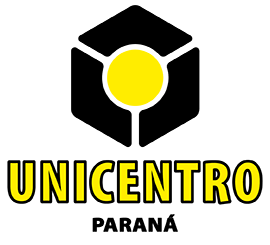

Ponderação de indicadores de análise de risco à inundação
Bem-vindos à pesquisa!
Muito obrigada por dedicar seu tempo e apoiar minha pesquisa de doutorado.
Você atua ou já atuou profissional ou voluntariamente na área de defesa civil ou prevenção de desastres? Ou já trabalhou com risco e vulnerabilidade em um contexto científico? Então esta pesquisa é exatamente para você.
A participação levará cerca de 15 a 20 minutos.
Consentimento
Todos os dados serão processados de forma anônima e utilizados apenas para fins científicos.
Esse trabalho faz parte de minha pesquisa de doutorado em Geografia realizada na Universidade Estadual do Centro-Oeste (UNICENTRO).
Em caso de dúvidas ou observações, sinta-se à vontade para entrar em contato comigo pelo e-mail:
fabiula.eurich@gmail.com
Conceito utilizado
Risco = Perigo × Exposição × Vulnerabilidade
Nesta pesquisa utilizamos uma estrutura hierárquica baseada no método Analytic Hierarchy Process (AHP) para avaliar o risco de inundação.
A estrutura abaixo apresenta os níveis de análise utilizados no estudo:
RISCO DE INUNDAÇÃO │ ├── Perigo │ ├ Suscetibilidade física à inundação │ └ Precipitação extrema │ ├── Vulnerabilidade │ ├ Socioeconômica │ │ ├ Idade │ │ ├ Renda │ │ ├ Escolaridade │ │ ├ Tipo de residência │ │ └ Saneamento básico │ │ │ └ Comportamental / Perceptiva │ ├ Consciência sobre mudanças climáticas │ └ Percepção de risco a desastres │ └── Exposição ├ Densidade populacional ├ Distância do rio ├ Uso e ocupação do solo └ Densidade predial
Na próxima etapa você será convidado a comparar pares de indicadores e indicar qual possui maior importância na avaliação do risco de inundação.
Não existem respostas certas ou erradas. O objetivo é identificar sua percepção sobre a importância relativa de cada indicador.
Identificação
Área de atuação
Anos de experiência
1 = mesma importância | 3 = importância moderada | 5 = importância forte | 7 = importância muito forte | 9 = importância extrema
Finalizar questionário
Clique em enviar para registrar suas respostas.
Enviando respostas...
Por favor aguarde alguns segundos.
Obrigado pela participação
Suas respostas foram registradas com sucesso no banco de dados da pesquisa.
Você pode baixar um relatório com suas respostas no botão abaixo: